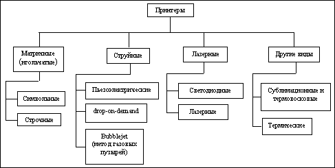
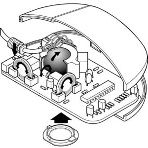
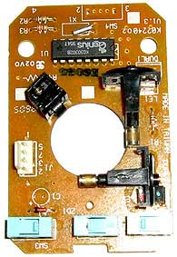
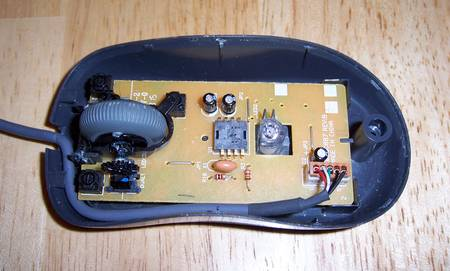
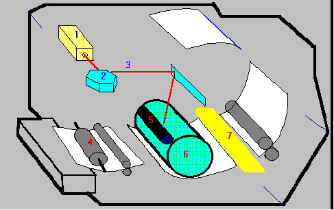
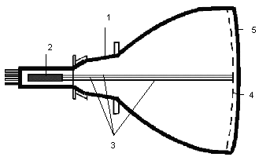
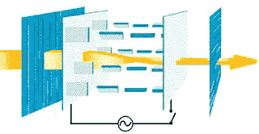

ЛАБОРАТОРНАЯ РАБОТА № 17
ОБЗОР ОСНОВНЫХ ТИПОВ
ПЕРИФЕРИЙНОГО ОБОРУДОВАНИЯ И ПРОТОКОЛОВ ПЕРЕДАЧИ ДАННЫХ
Цель работы — ознакомиться с основными типами периферийного оборудования и протоколами передачи данных.
Теоретическая часть
Основное периферийное оборудование
Основное назначение периферийного оборудования — обеспечить поступление в ЭВМ из окружающей среды программ и данных для обработки, а также выдачу результатов работы ЭВМ в виде, пригодном для восприятия человека или для передачи на другую ЭВМ, или в иной, необходимой форме периферийное оборудование в немалой степени определяет возможности применения ЭВМ.
Периферийное оборудование можно разделить на несколько групп по функциональному назначению:
1. Устройства ввода-вывода — предназначены для ввода информации в ПК, вывода в необходимом для оператора формате или обмена информацией с другими ПК. К такому типу ПУ можно отнести внешние накопители (ленточные, магнитооптические), модемы.
2. Устройства вывода — предназначены для вывода информации в необходимом для оператора формате. К этому типу периферийного оборудования относятся: принтер, монитор (дисплей), аудиосистема.
3. Устройства ввода — Устройствами ввода являются устройства, посредством которых можно ввести информацию в компьютер. Главное их предназначение — реализовывать воздействие на машину. К такому виду периферийных устройств относятся: клавиатура (входит в базовую конфигурацию ПК), сканер, графический планшет и т.д.
4. Дополнительное периферийное оборудование — такое как манипулятор «мышь», который лишь обеспечивает удобное управление графическим интерфейсом операционных систем ПК и не несет ярко выраженных функций ввода либо вывода информации; WEB-камеры, способствующие передаче видео и аудио информации в сети Internet, либо между другими ПК. Последние, правда, можно отнести и к устройствам ввода, благодаря возможности сохранения фото, видео и аудио информации на магнитных или магнитооптических носителях.
Каждые из перечисленных групп устройств выполняют определенные функции ограниченные их возможностями и назначением.
Периферийное оборудование ввода-вывода информации
Магнитооптические накопители — приводы CD-ROM, CD-R, CD-RW, DVD-R, DVD-RW. Обладают следующей вместимостью данных: CD-R, CD-RW до 700 MB данных, DVD-R, DVD-RW до 4.7 GB данных.
Информация на магнитооптических накопителях типа CD-R, представляется чередованием углублений и пиков. Этот рельеф создается при производстве механическим путем. Информация наносится вдоль тонких дорожек. Считывание происходит путем сканирования дорожек лазерным лучом, который по-разному отражается от углублений и пиков.
На дисках, которые позволяют многократную перезапись, применяется магнитооптический принцип, в основу которого положено физическое свойство: коэффициент отражения лазерного луча от по-разному намагниченных участков диска с особым образом нанесенным магнитным покрытием различен.
Скорость записи\перезаписи таких носителей различна и зависит от характеристик самого привода и «болванки» диска. В настоящее время чаще встречаются приводы со скоростями записи\перезаписи 48х и 24х для CD-R/RW и 16х и 8х для DVD-R/RW соответственно.
Флэш-карты.К этой разновидности памяти пользователи предъявляют несколько требований:
Пятнадцать лет назад компания Toshiba придумала технологию энергонезависимой полупроводниковой памяти, которую она назвала флэш-памятью. Микросхемы, сохраняющие данные после отключения питания были известны и ранее (BIOS), но с такой памятью было связанно много неудобств: для записи требовались специальные устройства-программаторы, а, чтобы стереть информацию приходилось применять ультрафиолетовое облучение кристалла. Флэш-память позволяет записывать и стирать данные без таких сложностей, благодаря чему обладает неплохим быстродействием и, к тому же, достаточно надежна.
Вскоре чипы флэш-памяти стали встраивать в различные устройства, а на их основе были созданы флэш-карты, с помощью которых можно было транспортировать различные данные.
Периферийное оборудование вывода информации
Мониторы. Монитор является необходимым устройством вывода информации. Монитор (или дисплей) позволяет вывести на экран алфавитно-цифровую или графическую информацию в удобном для чтения и контроля пользователем виде. В соответствии с этим, существует два режима работы: текстовой и графический. В текстовом режиме экран представлен в виде строк и столбцов. В графическом формате параметры экрана задаются числом точек по горизонтали и числом точечных строк по вертикали. Количество горизонтальных и вертикальных линий экрана называется разрешением. Чем оно выше, тем больше информации можно отобразить на единице площади экрана.
Классификация мониторов
· По виду выводимой информации
o алфавитно-цифровые
o дисплеи, отображающие только алфавитно-цифровую информацию
o дисплеи, отображающие псевдографические символы
o интеллектуальные дисплеи, обладающие редакторскими возможностями и осуществляющие предварительную обработку данных
o графические
o векторные
· По строению
o ЭЛТ — на основе электронно-лучевой трубки (англ. cathode ray tube, CRT)
o ЖК — жидкокристаллические мониторы (англ. liquid crystal display, LCD)
o Плазменный — на основе плазменной панели
o Проекционный — видеопроектор и экран, размещённые отдельно или объединённые в одном корпусе (как вариант — через зеркало или систему зеркал)
o OLED-монитор — на технологии OLED (англ. organic light-emitting diode — органический светоизлучающий диод)
o Виртуальный ретинальный монитор — технология устройств вывода, формирующая изображение непосредственно на сетчатке глаза.
· По типу видеоадаптера
o HGC
o CGA
o EGA
o VGA, SVGA
· По типу интерфейсного кабеля
o композитный
o раздельный
o D-Sub
o DVI
o USB
o HDMI
o DisplayPort
o S-Video
Устройство монитора с ЭЛТ
Электронно-лучевая трубка (ЭЛТ, или CRT, Cathode Ray Tube) — это традиционная технология формирования изображения на дне герметично запечатанного стеклянного «баллона. Мониторы получают сигнал от компьютера и преобразуют его в форму, воспринимаемую электронно-лучевой пушкой, расположенной в баллоне. Широкая часть баллона состоит из маски и люминесцентного покрытия, на котором создается изображение. В качестве люминофоров для цветных ЭЛТ используются довольно сложные составы на основе редкоземельных металлов (иттрия, эрбия и т.п.). Люминофор — это вещество, испускающее свет при бомбардировке его заряженными частицами. Электромагнитные поля управляют пучком электронов: поток на пути к люминофору проходит через модулятор интенсивности и ускоряющую систему, работающие по принципу разности потенциалов; отклоняющая система изменяет направление потока частиц таким образом, что они достигают нужного места на экране, проходя через теневую маску, падают на фосфоресцирующую поверхность и формируют на нем изображение (активизированный электронным лучом участок экрана испускает свет, видимый глазом). Такая технология называется эмиссионной.
Таким образом, электронно-лучевые трубки, используемые в современных мониторах, имеют следующие основные элементы:
· электронные пушки (по одной на каждый цвет RGB-триады или одну, но испускающую три пучка);
· отклоняющую систему, то есть набор электронных «линз», формирующих пучок электронов;
· маску, обеспечивающую точное попадание электронов от пушки каждого цвета в «свои» точки экрана;
· слой люминофора, формирующий изображение при попадании электронов в точку соответствующего цвета.
Устройство ЖК - монитора
Каждый пиксел ЖК-дисплея состоит из слоя молекул между двумя прозрачными электродами, и двух поляризационных фильтров, плоскости поляризации которых (как правило) перпендикулярны. В отсутствие жидких кристаллов свет, пропускаемый первым фильтром, практически полностью блокируется вторым.
Поверхность электродов, контактирующая с жидкими кристаллами, специально обработана для изначальной ориентации молекул в одном направлении. В TN-матрице эти направления взаимно перпендикулярны, поэтому молекулы в отсутствие напряжения выстраиваются в винтовую структуру. Эта структура преломляет свет таким образом, что до второго фильтра плоскость его поляризации поворачивается, и через него свет проходит уже без потерь. Если не считать поглощения первым фильтром половины неполяризованного света — ячейку можно считать прозрачной.
Если же к электродам приложено напряжение — молекулы стремятся выстроиться в направлении поля, что искажает винтовую структуру. При этом силы упругости противодействуют этому, и при отключении напряжения молекулы возвращаются в исходное положение. При достаточной величине поля практически все молекулы становятся параллельны, что приводит к непрозрачности структуры. Варьируя напряжение, можно управлять степенью прозрачности.
Если постоянное напряжение приложено в течение долгого времени — жидкокристаллическая структура может деградировать из-за миграции ионов. Для решения этой проблемы применяется переменный ток, или изменение полярности поля при каждой адресации ячейки (т.к. изменение прозрачности происходит при включении тока, вне зависимости от его полярности).
Во всей матрице можно управлять каждой из ячеек индивидуально, но при увеличении их количества это становится трудновыполнимо, так как растёт число требуемых электродов. Поэтому практически везде применяется адресация по строкам и столбцам.
Проходящий через ячейки свет может быть естественным — отражённым от подложки (в ЖК-дисплеях без подсветки). Но чаще применяют искусственный источник света, кроме независимости от внешнего освещения это также стабилизирует свойства полученного изображения.
Таким образом полноценный ЖК-монитор состоит из электроники, обрабатывающей входной видеосигнал, ЖК-матрицы, модуля подсветки, блока питания и корпуса. Именно совокупность этих составляющих определяет свойства монитора в целом, хотя некоторые характеристики важнее других.
Принтеры
Классификация принтеров представлена на рис. 17. 1.

Рис. 17. 1. Классификация принтеров
В данное время наиболее распространены струйные и лазерные принтеры.
Струйные принтеры.Качество печати струйного принтера лишь немногим уступает качеству печати лазерных принтеров, при этом финансовые затраты аналогичны затратам при покупке матричного принтера. Эти принтеры идеально подходят для домашнего применения, потому что работают они тихо и просты в обслуживании, ,как и многие другие домашние приборы.
В струйных принтерах для формирования изображения используются специальные сопла, через которые на бумагу подаются чернила. Тонкие, как волос, сопла находятся на головке принтера, где установлен резервуар с жидкими чернилами, которые, как микрочастицы, переносятся через сопла на материал носителя. Число сопел зависит от модели принтера и его изготовителя. Обычно их бывает от 16 до 64. Некоторые последние модели имеют гораздо большее число сопел, например, головка принтера DeskJet 1600 имеет 300 сопел для черных чернил и 416 - для цветных.
Поскольку образ символа воспроизводится с использованием всех задействованных сопел одновременно, в качестве параметра, определяющего скорость печати, в струйных принтерах также принято считать количество символов в секунду (cps), хотя в рекламных проспектах скоростью печати называют число страниц, печатаемых в минуту.
Хранение чернил осуществляется двумя методами:
— головка принтера является составной частью патрона с чернилами, замена патрона с чернилами одновременно связана с заменой головки;
— используется отдельный сменный резервуар, который через систему капилляров обеспечивает чернилами головку принтера.
Фирмы-изготовители реализуют различные способы нанесения чернил на бумагу:
· пьезоэлектрический метод;
· метод газовых пузырей;
· метод drop-on-deman
Лазерный принтер. Лазерные принтеры формируют изображение путем позиционирования точек на бумаге (растровый метод). Первоначально страница формируется в памяти принтера и лишь затем передается в механизм печати. Растровое представление символов и графических образов производится под управлением контроллера принтера. Каждый образ формируется путем соответствующего расположения точек в ячейках сетки или матрицы, как на шахматной доске.
Растровая технология в значительной степени отличается от векторной, используемой в перьевых графопостроителях. При использовании векторной технологии изображение формируется путем построения линий из одной точки в другую.
Лазерные принтеры, получившие наибольшее распространение, используют технологию фотокопирования, называемую еще электрофотографической, которая заключается в точном позиционировании точки на странице посредством изменения электрического заряда на специальной пленке из фотопроводящего полупроводника. Подобная технология печати применяется в ксероксах.
Важнейшим конструктивным элементом лазерного принтера является вращающийся фотобарабан, с помощью которого производится перенос изображения на бумагу. Фотобарабан представляет собой металлический цилиндр, покрытый тонкой пленкой из фотопроводящего полупроводника (обычно оксид цинка). По поверхности барабана равномерно распределяется статический заряд. С помощью тонкой проволоки или сетки, называемой коронирующим проводом. На этот провод подается высокое напряжение, вызывающее возникновение вокруг него светящейся ионизированной области, называемой короной.
Лазер, управляемый микроконтроллером, генерирует тонкий световой луч, отражающийся от вращающегося зеркала. Этот луч, попадая на фотобарабан, засвечивает на нем элементарные площадки (точки), и в результате фотоэлектрического эффекта в этих точках изменяется электрический заряд. Для некоторых типов принтеров потенциал поверхности барабана уменьшается от -900 до -200 В. Таким образом, на фотобарабане возникает копия изображения в виде потенциального рельефа.
На следующем рабочем шаге с помощью другого барабана, называемого девелопером (developer), на фотобарабан наносится тонер - мельчайшая красящая пыль. Под действием статического заряда мелкие частицы тонера легко притягиваются к поверхности барабана в точках, подвергшихся экспозиции, и формируют на нем изображение.
Лист бумаги из подающего лотка с помощью системы валиков перемещается к барабану. Затем листу сообщается статический заряд, противоположный по знаку заряду засвеченных точек на барабане. При соприкосновении бумаги с барабаном частички тонера с барабана переносятся (притягиваются) на бумагу.
Для фиксации тонера на бумаге листу вновь сообщается заряд и пропускается между двумя роликами, нагревающими его до температуры около 180° - 200°С. После собственно процесса печати барабан полностью разряжается, очищается от прилипших частиц тонера и готов для нового цикла печати. Описанная последовательность действий происходит очень быстро и обеспечивает высокое качество печати.
Аудиоплата дает возможность исполнять музыку и воспроизводить звуки с помощью компьютера. Вместе с аудиоплатой обычно поставляются звуковые колонки, а часто и микрофон. Аудиоплата представляет средства записи, воспроизведения и редактирования музыки и речевых сообщений.
Многие программы, в особенности игровые, используют аудиоплаты для вывода музыкального сопровождения, звуковых, в том числе речевых, эффектов.
Периферийное оборудование ввода информации
Клавиатура — один из важнейших элементов связи человека с компьютером. Клавиатура является основным устройством ввода информации в персональный компьютер. Данные, которые требуется обработать, и команды, подлежащие выполнению, сообщаются компьютеру посредством клавиатуры. Кроме того, через нее производится управление работой компьютера во время выполнения программы.
До недавнего времени использовалась стандартная клавиатура, 101/102 клавиши (первая модель клавиатуры содержала лишь 83 клавиши), но с развитием персональных компьютеров производители старались развивать и основное устройство ввода информации. Это и привело к созданию мультимедийных клавиатур, с гораздо большим количеством кнопок, которые в наши дни все больше и больше набирают популярность.
К дополнительным клавишам относятся группы клавиш управления мультимедийными приложениями (например, вызов и управление программами просмотра видео), клавиши управления громкостью системы, группа клавиш для быстрого вызова офисных приложений (Word, Excel), калькулятора, Internet Explorer и т.д.
Для клавиатур компьютеров используются кнопки различных типов, из которых наиболее широкое распространение получили два: емкостные и контактные.
Емкостные кнопки имеют достаточно простое устройство. Они состоят из подвижной металлической пластинки, прикрепленной к кнопке, и двух металлических выступов на печатной плате, образующих практически неподвижные электроды одного конденсатора переменной емкости. При каждом нажатии на клавишу подвижная пластина приближается к выступам, что приводит к изменению емкости конденсатора. Это изменение является указанием на нажатие (или отпускание) клавиши. В электронной схеме такой клавиатуры имеются компоненты, различающие состояние кнопки в зависимости от ее емкости. Помимо простоты устройства емкостные кнопки имеют достаточно высокую надежность. Они выдерживают до 100 и более миллионов циклов нажатий и отпусканий.
Контактные кнопки могут изготавливаться в различных вариантах, но всегда в основе лежит принцип непосредственного механического контакта между двумя гибкими металлическими пластинками. В месте соприкосновения пластинки обычно имеют специальное покрытие, обеспечивающее малое сопротивление контакта. В клавиатуре компьютеров используются контактные кнопки, сконструированные так, что нажатии кнопки приводит к высвобождению одной из предварительно нагруженных пластинок, которая вследствие этого резко соприкасается с другой пластинкой, создавая контакт. В этом случае сила соприкосновения двух пластинок не зависит от силы нажатия клавиши, что в значительной степени уменьшает механические колебания, возникающие в момент осуществления контакта. Срок службы контактных кнопок характеризуется числом срабатываний, составляющим порядка нескольких десятков миллионов циклов. Они более помехоустойчивы, чем емкостные.
Подключение клавиатуры к компьютеру может осуществляться через порт PS/2, USB и через ИК (инфракрасный) порт для беспроводных моделей. В последнем способе подключения клавиатура требует дополнительного источника питания, например батарейки.
Дополнительное периферийное оборудование
Манипулятор мышь — с развитием операционных систем с графическим интерфейсом этот манипулятор стал просто «незаменимой» частью персонального компьютера. Манипулятор «мышь» обеспечивает простое и удобное управление многими функциями ОС и прикладных программ.
Мыши различаются по трем характеристикам — числу кнопок, используемой технологии и типу соединения устройства с системным блоком. В первоначальной форме в устройстве была одна кнопка. Перебор функций определяется перемещением мыши, но выбор функции происходит только при помощи кнопки, что позволяет избежать случайного запуска задачи при переборе функций меню. С помощью одной кнопки можно реализовать только минимальные возможности устройства. Вся работа компьютера в этом случае заключается в определении положения кнопки — нажата она или нет.
Тем не менее, хорошо составленное меню полностью позволяет реализовать управление компьютером. Однако две кнопки увеличивают гибкость системы. Например, одна кнопка может использоваться для запуска функции, а вторая для ее отмены. Вне всяких сомнений, три кнопки еще более увеличат гибкость управления. Но, с другой стороны, увеличение кнопок увеличивает сходство устройства с клавиатурой, возвращая ему недостатки последней. Практически три кнопки являются разумным пределом, потому что они позволяют лежать указательному, среднему, безымянному пальцам на кнопках, в то время как большой и мизинец используются для перемещения мыши и удержании ее в ладони.
Большинство моделей снабжаются двумя кнопками, но с появлением манипуляторов со «скролом» двухкнопочные мыши постепенно уходят в тень, так как «скрол» одновременно выполняет сразу две функции: может использоваться в качестве третьей кнопки, и очень удобен для прокрутки документов.
Существуют «мыши» двух видов: шариковые и оптические. В шариковых манипуляторах используется механический способ передачи направления движения (шарик расположенный внизу манипулятора при перемещении вращает два расположенных внутри валика). В оптических «мышах» вместо шарика используется светодиод.
Основными компонентами мыши являются:
· корпус, который вы держите в руке и передвигаете по рабочему столу;
· шарик - датчик перемещения мыши;
· несколько кнопок (обычно две) для подачи (или выбора) команд;
· кабель для соединения мыши с компьютером;
· разъем для подключения к компьютеру.
 
Рис. 17. 2. Устройство механической мыши
Корпус мыши сделан из пластмассы, и в нем практически нет движущихся компонентов. В верхней части корпуса, под пальцами, располагаются кнопки. Количество кнопок может быть разным, но обычно их только две. Для работы дополнительных кнопок нужны специальные программы. Внизу располагается небольшой покрытый резиной металлический шарик, который вращается при перемещении мыши по столу. Шарик катится по коврику или столу и вращает ролики, по перемещению которых можно судить о его x- и у-координатах. Вращение каждого ролика передаётся на диск с прорезями, в результате чего инфракрасный луч, идущий от светодиода к детектору, прерывается. Частота прерываний световых импульсов несёт информацию о скорости движения мыши и пройденном расстоянии вдоль соответствующей оси. Процессор переводит сигнал обоих детекторов в цифровую последовательность и посылает её по кабелю в контроллер положения курсора компьютера. Кроме того, процессор передаёт в компьютер информацию о том, нажата ли та или иная клавиша мыши.
Светодиод в корпусе оптической мыши освещает поверхность, по которой её перемещают. Изображение этой поверхности фокусируется линзой, а видеокамера делает снимки со скоростью 1500 и более кадров в секунду. В цифровом процессоре каждые два последовательных изображения сравниваются между собой, тем самым определяется, что изменяется от кадра к кадру, и вычисляются х-у-координаты и скорость мыши
«Мыши» с типом подключения при помощи COM-порта — одни и первых манипуляторов. В основном снабжались двумя кнопками. На рынке продержалась довольно долго. PS/2 — манипуляторы широко используются и сейчас, несмотря на бурно развивающиеся другие типы соединений. USB и ИК соединения используется, в основном, для оптических манипуляторов. В отличие от всех других типов соединений мыши, использующие инфракрасный порт нуждаются в дополнительном источнике питания. Обычно используются батарейки.
Протокол шины PCI
В каждой транзакции (обмене по шине) участвуют два устройства — инициатор (initiator) обмена, он же ведущее (master) устройство, и целевое (target) устройство (ЦУ), оно же ведомое (slave). Шина PCI все транзакции трактует как пакетные: каждая транзакция начинается фазой адреса, за которой может следовать одна или несколько фаз данных.
Все основные пересылки данных на шине PCI управляются тремя сигналами:
· FRAME# - Управляется мастером для того, чтобы он мог указать начало и конец транзакции.
· IRDY# - Управляется мастером, чтобы он мог инициировать циклы ожидания.
· TRDY# - Управляется целевым устройством, чтобы оно могло инициировать циклы ожидания.
Когда неактивны сигналы FRAME# и IRDY#, интерфейс находится в ожидании - состояние IDLE. Первый фронт синхроимпульса, на котором активизируется сигнал FRAME# - это фаза адреса, в которую передаются адрес и команда шины. По следующему фронту синхроимпульса начинается первая фаза данных или более, в течение которой передаются данные между мастером и целевым устройством по фронту синхроимпульса, для которого активны сигналы IRDY# и TRDY#. Циклы ожидания могут быть инициированы в фазе данных мастером либо целевым устройством, с сигналами IRDY# и TRDY#, соответственно. Когда данные корректны, для независимой ни от чего установки сигнала xRDY# требуется источник данных (IRDY# - для транзакции записи, TRDY# - для транзакции чтения). Получение данных может привести к установлению в активное состояние сигналов xRDY#, конкретно - в зависимости от того, какой сигнал выбран.
Если мастер установил сигнал IRDY#, то он не может изменять состояние сигналов IRDY# или FRAME# до тех пор, пока не завершится текущая фаза данных, независимо от состояния TRDY#. Если целевое устройство один раз уже установило сигнал TRDY# или STOP#, то оно не может изменять состояние сигналов DEVSEL#, TRDY# или STOP# до тех пор, пока не завершится текущая фаза данных. Ни мастер, ни целевое устройство не могут изменять свое состояние, пока не завершится передача данных. Когда мастер предполагает завершить одну большую передачу данных (это может произойти сразу после фазы адреса), то сигнал FRAME# переходит в неактивное, а IRDY# - в активное, показывая готовность мастера. После того, как целевое устройство показывает, что данная передача - последняя (сигнал TRDY# -активен), интерфейс возвращается в состояние ожидания IDLE, с активными сигналами FRAME# и IRDY#.Шина позволяет уменьшить мощность (ток), потребляемую устройствами, ценой снижения производительности, применяя пошаговое переключение линий AD[31:0] и PAR (address/data stepping). Здесь возможны два варианта.
Плавный шаг (continuous stepping) — начало формирования сигналов слаботочными формирователями за несколько тактов до введения сигнала-квалификатора действительной информации (FRAME# в фазе адреса, IRDY# или TRDY# в фазе данных). За эти несколько тактов сигналы «доползут» до требуемого значения при меньшем токе.
Дискретный шаг (diskrete stepping) — нормальные формирователи срабатывают не все сразу, а группами (например, побайтно), в каждом такте по группе. При этом снижаются броски тока, поскольку одновременно переключается меньше формирователей.
Устройство само может и не пользоваться этими возможностями но должно «понимать» такие циклы. Задерживая сигнал FRAME#, устройство рискует потерять право доступа к шине, если арбитр получит запрос от более приоритетного устройства.
Протокол квитирования обеспечивает надежность обмена — ведущее устройство всегда получает информацию об отработке транзакции ЦУ. Средством повышения надежности (достоверности) является применение контроля паритета и в фазе адреса, и в фазе данных защищены битом паритета PAR (количество единичных бит этих линий, включая PAR, должно быть четным). Действительное значение PAR появляется на шине с задержкой в один такт относительно линий AD и C/BE#. При обнаружении ошибки ЦУ вырабатывается сигнал PERR# (со сдвигом на такт после действительности бита паритета). В подсчете паритета при передаче данных учитываются все байты, включая и недействительные (отмеченные высоким уровнем сигнала C/BEx#). Состояние бит, даже и в недействительных байтах данных, во время фазы данных должно оставаться стабильным.
Каждая транзакция на шине должна быть завершена планово или прекращена, при этом шина должна перейти в состояние покоя (сигналы FRAME# и IRDY# пассивны). Завершение транзакции выполняется либо по инициативе ведущего устройства, либо по инициативе ПУ.
Ведущее устройство может завершить транзакцию одним из следующих способов.
· Нормальное завершение (Comletion) выполняется по окончании обмена данными.
· Завершение по тайм-ауту (Time-out) происходит, когда во время транзакции у ведущего устройства отбирают право на управление шиной (снятием сигнала GNT#) и истекает время, указанное в его таймере Latency Timer. Это может случиться, если адресованное ЦУ оказалось непредвиденно медленным или запланирована слишком длинная транзакция. Короткие транзакции (с одной-двумя фазами данных) даже в случае снятия сигнала GNT# и срабатывания таймера завершаются нормально.
· Транзакция отвергается (Master-Abort), когда в течение заданного времени ведущее устройство не получает ответа ЦУ (DEVSEL#).
· Транзакция может быть прекращена по инициативе ЦУ; для этого оно может ввести сигнал STOP#. Возможны три типа прекращения.
· Повтор (Retry) — сигнал STOP# вводится при пассивном сигнале TRDY# до первой фазы данных. Эта ситуация возникает, когда ЦУ из-за внутренней занятости не успевает выдать первые данные в положенный срок (16 тактов). Повтор является указанием ведущему устройству на необходимость нового запуска той же транзакции.
· Отключение (Disconnect) — сигнал STOP# вводится во время или после первой фазы данных. Если сигнал STOP# введен при активном сигнале TRDY# очередной фазы данных, то эти данные передаются и на том транзакция завершается. Если сигнал STOP# введен при пассивном сигнале TRDY#, то транзакция завершается без передачи данных очередной фазы. Отключение производится, когда ЦУ неспособно своевременно выдать или принять очередную порцию данных пакета.
· Отказ (Target-Abort) — сигнал STOP# вводится одновременно со снятием сигнала DEVSEL# (в предыдущих случаях во время появление сигнала STOP# сигнал DEVSEL# был активен). После этого данные уже не передаются. Отказ вводится, когда ЦУ обнаруживает фатальную ошибку или иные условия, по которым оно уже никак не сможет обслужить данный запрос.
Использование трех типов прекращения вовсе не обязательно для всех ЦУ, однако любое ведущее устройство должно быть готово к завершению транзакций по любой из этих причин.
Практическая часть
Манипулятор мышь
Укажите основные составляющие мыши и их назначение.

Рис. 17. 3. Мышь
Лазерный принтер
На рисунке укажите основные детали лазерного принтера:
Генератор лазера
Узел фиксации изображения
Девелопер
Вращающееся зеркало
Лазерный луч
Фотобарабан
Валики, подающие бумагу

Рис. 17. 4. Лазерный принтер
Дайте описание назначения указанных устройств.
Монитор с ЭЛТ
Укажите основные составляющие монитора с ЭЛТ.

Рис. 17. 5. Монитор с ЭЛТ
Как происходит формирование изображения в ЖК-мониторах?

Рис. 17. 6. Формирование изображения в ЖК-мониторах
Контрольные вопросы
1. Назовите основное периферийное оборудование.
2. Классификация периферийного оборудования.
3. Классификация мониторов.
4. Устройство ЖК-монитора.
5. Классификация принтеров.
6. Устройство лазерного принтера.
7. Протокол шины PCI.